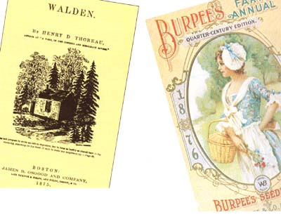
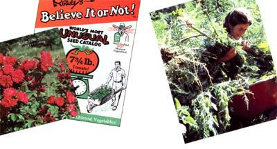
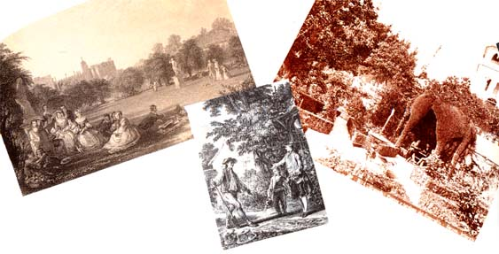
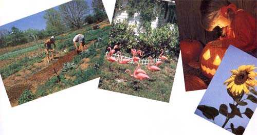

It all started over a year ago when we read Becky Rupp's Blue Corn and Square Tomatoes (Garden Way Publishing). Rupp's text, which traces the history and lore of America's favorite garden vegetables, didn't help us grow a single plant, but it was so finely written and such fascinating fun to read that our office copy repeatedly disappeared. Since the whole staff had become Rupp fans, we finally persuaded Becky to take time out from her many projects to write the following essay, providing us with some enjoyable food for thought to help start this new gardening year.
HENRY DAVID THOREAU, during Walden Pond's balmy spring of 1845, laid out $14.72 1/2 for garden supplies. The price included, he admitted shamefacedly, the hire of a neighboring farmer with team to do his plowing, but he got all his seed corn for free, so things seem to have averaged out. In view of this, our projected family garden expenditures - to include, in the wishful planning period, heirloom apple and fig trees, wine grapes, wisteria, lilac bushes, six colors of day lilies and (what the hell) a new rotary tiller attachment for the tractor - add up to a truly appalling total, a figure that can be contemplated, like the national debt, only in humiliated silence. Thoreau could have survived for years on it.
It doesn't help to turn a page or two and find Thoreau announcing smugly that his 1845 food bill was $8.74 and that the entire cost of his house (with windows, closet, brick fireplace and two trapdoors) was $28.12 1/2.
Now don't get me wrong; I admire Thoreau. I, too, believe in respect for the planet, in the duty of civil disobedience, and in stepping to the music that you hear, no matter how measured or far away. I, too, believe that it is better to sit on a pumpkin and have it all to yourself than to be crowded on a velvet cushion. But when it comes to gardening and the kind of economy Thoreau both practiced and advocated (Walden, Chapter One), I have a hard time coming up to scratch. I read seed catalogs and crave blackberry lilies, Spanish bluebells and the kind of irises that cost $6.75 apiece.
Seed catalogs. One of the few pleasures in the chilly and debt-ridden weeks after Christmas is the arrival of the seed catalogs of which we rake in some 30 or more, ranging from a 200-page full-color encyclopedic production on glossy paper down to a postcard from somebody in Ohio who raises nothing but Gilfeather turnips. It's a pleasure Americans have enjoyed for over a century. The earliest of our seed catalogs is generally attributed to a Mr. B.K. Bliss of Springfield, Massachusetts, which publication, enticingly illustrated, first fell into the eager paws of American gardeners in 1853.
Mr. Bliss has long since vanished from the seed-selling scene, but many of his contemporaries vociferously survive. Prominent among them is W. Atlee Burpee, whose firm in Warminster, Pennsylvania, gives us the "Garden Book." The W, for those of you who fret over such minor mysteries, stands for Washington; W. Atlee was named for his maternal grandfather, who was probably named for George. (The original Atlees, family legend has it, descended from a 12th century Sir Richard Atlee, friend of Robin Hood and father of Maid Marian.) W. Atlee went into the seed business at an age when most of us are flounderingly emerging from high school, publishing in 1876 his first catalog: a four-page poultry-dominated folder titled "Catalog of High Class Land and Water Fowls." It had a black-and-white picture of ducks on the cover. Three years later the "Catalog" had become the "Farm Annual" and was increasingly vegetable. Included among the Land and Water Fowls, the Scotch Colly Dogs and the Thoroughbred Pigs was the fabulous Surehead Cabbage: "No other cabbage," gloated the catalog of 1888, "has elicited so many voluntary expressions of praise." Also featured were the Celestial pepper from China, the dauntingly named Ironclad watermelon, and Persian Rose Muscatelle tobacco, which came, said Mr. Burpee, to Philadelphia from Hungary and to Hungary straight from the garden of the Shah of Persia, where it grew monstrous leaves large enough to cover the body of a fair-sized man.
Romantic tidbits of this ilk are less common in modern catalogs, a generally prosaic bunch given to such descriptive paragraphs as "V. sweet; high vitamin C; very productive." While some may argue that this says it all, others of us like a bit more butter with our bread. A few catalogs still pander to the bookish: That of Thompson & Morgan, for example, last year carried an exciting little tale of the search for Golden Impatiens through the tiger-rich highlands of Malaysia. White Flower Farm's "Garden Book," a paragon of its kind, can be satisfyingly read in bed. (The "Garden Book" also establishes an exceptional emotional rapport with its reading public, being full of such comforting phrases as, "If a few simple instructions are followed even haphazardly. . .") Still, the trend in catalogs today is less text, more pictures. It all probably has something to do with the rise of television.
And prices are up. In 1888, the average Burpee seed packet cost the gardener a thin dime, payable in raw cash ("The efficiency of the post-office department is such," stated the "Farm Annual" trustingly, "that it is rarely that a letter or package is lost or stolen") or, if you lacked cash, in postage stamps. Prices nowadays wobble somewhere around $1, and postage stamps are no longer legal tender.
Favorite seed catalogs in our family vary from member to member. My husband, who comes from Pennsylvania, patriotically favors those from Burpee (Warminster) and Agway Seeds (Elizabethtown). Our three sons, who arrived variously in Maryland and Massachusetts, are addicted to a comic book sized publication titled "Ripley's Believe It or Not! World's Most Unusual Seed Catalog!" which hails from Westport, Connecticut. "Ripley's," in exclamation point peppered newsprint, offers miniature pumpkins and massive sunflowers, white cucumbers, square tomatoes and gourds shaped like penguins. I come from Vermont and thus remain staunchly faithful to the Vermont Bean Seed Company, which not only is located in Fair Haven but sells a dandy Tshirt with a red kidney bean on the chest. I also have a sneaking fondness for Le Jardin du Gourmet (West Danville), whose crotchety-sounding owner sells German beer radishes. They grow as big as turnips, and you're supposed to slice them and dunk them in sugar.
From all of the above, plus some, our collective seed lists usually constitute a challenging exercise in column addition and provide staggering annual proof that no one short of Howard Hughes should plant a garden. Unrestrained post-Christmas list making in our household is thus inevitably followed by a painful period of reassessment and prioritization, occasionally accompanied by the underhanded removal of (unattractive) items from other people's lists and the concomitant addition of (desirable) items to one's own list, which leads to bitterness and ill feeling. It's a difficult time all around.
Once the seeds are purchased, paid for and planted, a whole new round of troubles begins. The ancient seed-sowing couplet
One for the rook, one for the crow,
One to die, and one to grow
is fine as far as it goes, but omits mention of the rabbit, the deer, the porcupine, the next door neighbor's Labrador retriever, the cutworm, the slug, the snail, the Colorado potato beetle and the irresponsibly pedaled tricycle. We lost all our sweet corn to deer one year, which catastrophic event markedly altered our attitude toward Bambi and Co.: We went, overnight, from nursing a vaguely misty-eyed affection to a venison vendetta worthy of Rambo. We never solved the problem either; the deer, a spoiled and cocky bunch in our neighborhood, hopped over our fence without batting an eye and knocked over and sneeringly stepped on our scarecrow. Tiger manure cunningly spotted about the border of the garden, I later read somewhere, effectively repulses deer and other voracious wildlife; this information came along too late to do us any good, and, in any case, tiger manure in Massachusetts has always been in notoriously short supply. We subsequently moved out of that house - not defeated by the deer, mind you; we had a our reasons - but I'm sure the deer are still solidly in possession, smugly chewing on the new owners' asparagus patch.
Then there are the weeds. Take a week or so off to go camping - say, in mid-July - and upon your return the garden will have vanished under an explosive tangle through which Tarzan would have felt comfortable frolicking with Cheetah. To avoid such fate, it is often necessary to hoe, incessantly, as in long row to hoe, tough row to hoe, and, in back-cracking moments of discouragement, hopeless. Hoe, according to the Oxford English Dictionary, is an Old High German word, variously spelled haugh, bough, how, haw and hoe. Extensive, if not enthusiastic, use of this tool over the centuries spawned a whole list of improved and modified hoes, among them the Bayonet, Dutch, Scuffle, Spanish and Vernon hoes. In all its permutations, it was historically, as presently, used "to cleanse Gardens of weeds." Thoreau used to hoe his beans daily from five in the morning until noon, muttering all the while about Roman wormwood, pigweed, sorrel and piper-grass. And after all that, he didn't even eat his beans. He sold them off, all 9 3/4 bushels of them, for $16.94, which he then spent on rice.
And there's the weather. "Everybody talks about the weather," one disgruntled gardener first wrote in the summer of 1897, "but nobody does anything about it." My gardening diary over the past eight years is a litany of weather disasters:
"May 18," I read. "A beautiful day. Set out tomatoes and peppers, planted marigolds.
"May 21. Hard freeze in the night. Tomato and pepper plants black, flat. All plum tomatoes lost on back porch." This last line is not an indication that the plum tomatoes somehow mysteriously disappeared in the clutter of the vast back porch, but that the seedlings in trays on the back steps had been similarly wiped out by the slings and arrows of outrageously frigid fortune. That was also the year, I discover by reading ahead, that creatures kept chewing on the cabbages, and the cucumbers got ahead of us and kept slinking about under the foliage, turning into yellow baseball bats. I was pregnant with Caleb that summer, and by August wasn't much for bending over.
The next spring nothing froze, but we had season-long monsoonlike rains; the garden turned to slop, everything got root rot and we all went out and bought enormous green rubber boots from the feed store.
The year after that we had a warm February: All the bulbs, deceived, came up, to be blitzed by a blizzard in March.
Given all these trials and tribulations, the W. Atlee Burpee Company some decades back became curious as to the character of gardeners and conducted a survey to find out just who was buying all those 10 cents packets of seeds. Their number one customers, they discovered, were doctors, closely followed by the presidents of small-town banks. The resident Mr. Burpee seems to have accepted these results in gratified silence, but I find loose ends dangling here. Why, for heaven's sake, doctors and bank presidents, professionals who by all rights should be spending their leisure time on the golf course? A rapid survey of our own gardening acquaintances turned up the following:
One retired mail person
Two environmental studies majors, now into computers and lampshade making
One musician
One artist
Five cell-biologists
One carpenter
One veterinary student
One balloon salesperson who dresses up like a rabbit
One beeswax candle maker who does puppet shows on the side for a day-care center
Three engineers
Two schoolteachers
Three writers
One weaver
One lawyer
One geologist who plays a wicked game of chess
One minister
One pharmacist
One breeder of Angora goats
No doctors or small-town bank presidents, which doesn't seem to point up much except the limitations of our social circle and the fact that there's no telling where you'll find a gardener. I always find surveys a little suspect anyway.
Another survey, conducted in 1985 by the National Gardening Association (based in Burlington, Vermont) concluded that, of the estimated 33 million home gardeners in the United States, some 55% plant and maintain their crops, unsurprisingly, for supplying fresh food. An additional 15% of home gardeners - Thoreau readers all - plant to save money; a frivolous 22% plant for fun. Which leaves us with a mysterious 8% who either skipped that part of the questionnaire or who garden for such quirkily bizarre reasons as to be unclassifiable.
Historically, too, reasons for gardening have learned heavily of food and the saving of money, though an unmistakable element - particularly in the richer upper echelon - obviously gardened for the fun of it. While the lesser folk hoed their turnips and onions, Henry VIII's garden at Hampton Court - among violets, primroses, mints, gillyflowers and roses - featured stone bears and dragons on pedestals as well as innumerable painted "beestes" trimmed in gold and perched, merry-go round-like, on green-and-white-striped poles. Henry's garden, where it is said he conducted his ill fated courtship of Anne Boleyn, also contained tennis courts, bowling alleys, archery butts and a pond garden, maintained in the off-hours by an army of laborers who conveyed buckets of river water out of "ye Themmes to fill the ponds in the night thymes." This carnival-like atmosphere was enlarged upon by Elizabeth I, who added a picnic tent, a summerhouse with a ceiling painted with clouds and a number of splendid waterworks, among them a "watersurprise" that could be triggered from a distance to drench unwary bystanders. (A similar device has operated in our garden since our youngest child learned to connect and turn on the hose.)
Later gardens were even more highfalutin. The grand garden of the 18th century ideally featured much miscellaneous statuary, a grotto (an ornamental cave tastefully decked out in seashells and fake stalactites) and a hermitage, generally a grim little structure erected just beyond the flower beds, intended to remind the casual flower picker of the vanity of worldly life. The grotto, in its ritziest incarnation, came furnished; Thomas Chippendale himself, in the 1760s, designed a garden-grotto chair in silver gilt, the seat shaped like a scallop shell and the legs like Chinese goldfish. This is, perhaps, the forerunner of the collapsible aluminum lawn chair.
The hermitage, at the height of this fashion, was actually intended to contain a hermit. A surviving newspaper advertisement from an 18th-century English country estate owner describes the process of hermit recruitment: The prospective employer offered a Bible, a pallet bed, an hourglass, food from the house and, after the first seven years, a lump sum of 700 guineas. In return, the hermit was to wear a robe, never shave, never leave the grounds and never speak to the servants. There was one applicant for this position, and he lasted only three weeks.
"Some people," wrote Richardson Wright, himself a devoted gardener and the author of several entrancing gardening books, "make a garden because it is the fashionable thing to do." Others garden for the sheer love of it, in which group can surely be numbered my all-time favorite gardener, Gilbert White, clergyman, of the village of Selbourne in the county of Southampton, England. The Reverend White spent all of his life, which ended in 1793, in Selbourne, where he dealt with an annual average of 10 burials and 15 baptisms, including over the course of his long career, 13 sets of twins. In his free time, which was considerable, he roamed the countryside, indefatigably attempting to satisfy a truly insatiable curiosity. He recorded the rainfall, watched the birds, dug into hedgehogs' nests, dissected a viper, measured a dead moose ("The lip, travelers say, is esteemed a dainty dish in North America"), tested the tunefulness of owl hoots with a pitch pipe and bellowed at bees through a loud-hailer to study their sense of hearing. And every year he delightedly planted his garden, which, in the manner of gardens, was beset by deer, wasps, aphids, turnip flies and "ungenial weather." Mr. White nonetheless persevered, eventually publishing in 1789 his magnum opus, The Natural History of Selbourne, which was to make him mildly famous. I think of him every gardening season with affection - planting primroses, harvesting onions, counting the eggs of crickets, capturing a bat, savoring the scent of honeysuckle on a summer evening.
There's a streak of all of these gardeners in all of us, certainly in my own family. The people down the road from us with the pink flamingos, the plaster donkeys and the aqua blue sea-horse birdbath are pure Tudor, and even our garden, though conspicuously lacking in tennis courts and archery butts, boasts a couple of horseshoe pegs and a rope swing. Grottoes and hermitages are few and far between these days, but we certainly have a number of dismal and decrepit small buildings that periodically lead us to contemplate, if not the vanity of worldly life, at least the inefficiency of the human repairperson. The children, out there peering at a woolly bear caterpillar through a magnifying glass, are standing smack in the honorable footsteps of Gilbert White; my husband and I, both devoted recorders of rainfalls, sunrises, germination rates and temperatures, are in our way, like Thoreau, self-appointed inspectors of snowstorms and rainstorms. We garden for many reasons, great and small. We garden for salad, for soup, for lemon basil and Italian parsley, for daisies and daffodils, for sunflower seeds to fill the bird feeder in February, for jack-o'-lanterns to carve at Halloween. We garden because it keeps the kids busy during the dog days; we garden because it fills, in a worthwhile manner, that vast blank space in the back yard that would otherwise go to grass and dandelions. And I suppose when it comes right down to it, we garden because it's an old cold world and sometimes the best a person can do is to give it children and some green things growing .
|
PHOTO CREDITS(LEFT TO RIGHT): THE GARDENER COLLECTION:BURPEE SEED CO.WHITE FLOWER FARM, LITCHFIELD, CT; RIPLEY'S BELIEVE IT OR NOT?; PAT STONE |
 Gardens of yesteryear reflect a diversity of priorities: romance (Hampton Court was noted for King Henry Vill's courting), raising food, and upper class ostentation. |
 Though not so extravagantly diverse as in past centuries, today's gardens still serve many purposes, from showy (or gaudy) to practical to providing Halloween fun. |
|
 |
 |
|